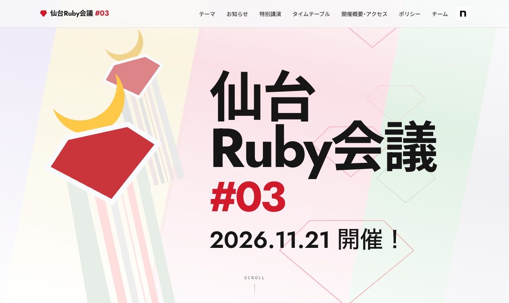
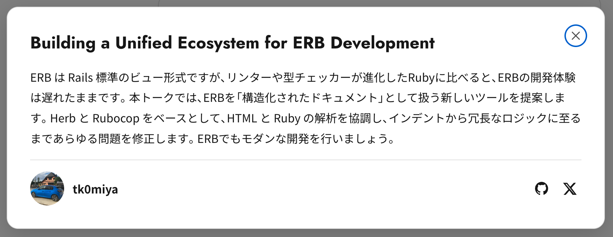

自己紹介
- 小宮 健（Takeshi KOMIYA）
- @tk0miya
- CTO of TIME INTERMEDIA, Inc.
- OSS Developer
- Sphinx（Python 製ドキュメンテーションツール）
- rbs_rails メンテナ（Rails アプリ用型生成ツール）
- 書籍: Sphinx をはじめよう（オライリー・ジャパン）

Gotanda.rb#70 / Takeshi KOMIYA / 2026-10-28
rbs-inline の型注釈の書き方を揃える
# bad: 同じ型を二重に書いている
# @rbs name: String
#: (String) -> String
def greet(name) = "Hello, #{name}"rbs-inline の型注釈の書き方を揃える
# bad: 同じ型を二重に書いている
# @rbs name: String
#: (String) -> String
def greet(name) = "Hello, #{name}"
# good
# @rbs name: String
# @rbs return: String
def greet(name) = "Hello, #{name}"使われていない let を見つける
RSpec.describe Foo do
let(:used) { 1 }
let(:unused) { 2 } # 誰も参照していない
it { expect(used).to eq(1) }
end使われていない let を見つける
RSpec.describe Foo do
let(:used) { 1 }
let(:unused) { 2 } # 誰も参照していない
it { expect(used).to eq(1) }
end1 行ブロックは numbered parameter で
# bad
users.map { |user| user.name }1 行ブロックは numbered parameter で
# bad
users.map { |user| user.name }
# good
users.map { _1.name }1 行ブロックは it で
# bad
users.map { |user| user.name.upcase }1 行ブロックは it で
# bad
users.map { |user| user.name.upcase }
# good
users.map { it.name.upcase }context と example を分離する（Jev の試作）
# bad
it "when the user is an admin, allows deletion" do
endcontext と example を分離する（Jev の試作）
# bad
it "when the user is an admin, allows deletion" do
end
# good
context "when the user is an admin" do
it "allows deletion" do
end
endインスタンス変数は reader 経由で読む
# bad
def full_name = "#{@first_name} #{@last_name}"インスタンス変数は reader 経由で読む
# bad
def full_name = "#{@first_name} #{@last_name}"
# good
attr_reader :first_name, :last_name
def full_name = "#{first_name} #{last_name}"_1、it、型注釈| 時代 | AI | RuboCop プラグイン |
|---|---|---|
| AI が未熟な頃 | ミスが多い | 人間向けと同じ役割 |
| AI と伴走する時代 | 精度が上がった | 規約を守らせるハーネスに |
| AI に任せる未来 | 丸投げ | ？ |
人間向けの cop と変わらない
指摘先が人間から AI に変わっただけ
AI の出力の精度が上がってきた
https://x.com/dhh/status/2102936073642869121
https://x.com/nysalor/status/2111091190103966017
仙台Ruby会議 #03 で rubocop-herb の話をします

仙台Ruby会議 #03 で rubocop-herb の話をします
